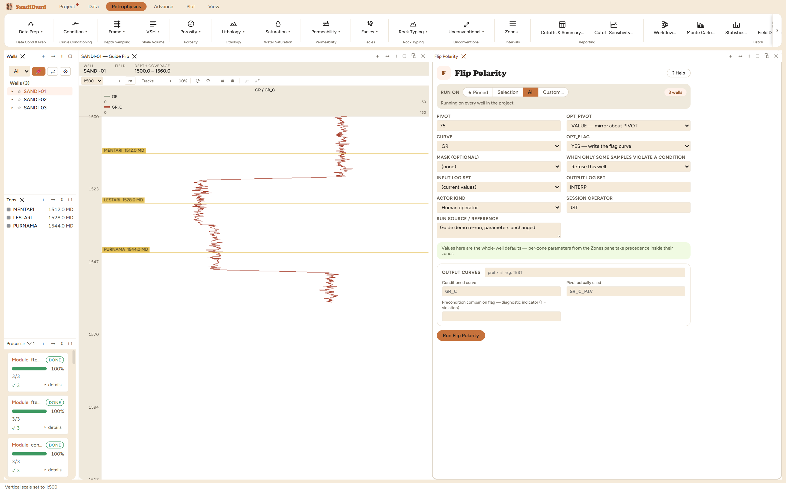

Mirrors a curve about a pivot: for an SP recorded with the wrong sign convention, or any reading delivered inverted.
OUT = 2·pivot − CURVE pivot: a given VALUE, or this well's own MIDRANGE or MEAN
Flip mirrors a curve: OUT = 2·pivot − CURVE. The use case is an SP delivered with the wrong sign convention, or any reading that arrived inverted. The whole decision is the pivot.
VALUE, pivot −19 mV, the P95 of the three wells' pooled SP, read from the data as the shale baseline (P95 rather than the single maximum, so one stray sample cannot set the reference). VALUE is the only reproducible choice: MIDRANGE and MEAN are computed per well, so the same run gives each well a different pivot and two wells' flipped curves are no longer on a common scale. Fine for a quick look, never for anything feeding a correlation. The run records whichever pivot it used in the companion curve, so even the per-well modes stay recoverable.

On these wells: 3 clean. And the mirror is exact: checked sample by sample against 2·(−19) − SP, zero mismatches across all 1185 samples. The sand deflections that read −75 mV now read +37 on the other side of the baseline; shale stays at the pivot.
Everything below is generated from the same manifest the application builds this module’s pane from — descriptions, defaults, sources, ranges and pre-run checks here are exactly what the running application enforces.
Mirrors a curve about a pivot: OUT = 2 x pivot - CURVE. For an SP recorded with the wrong sign convention, or any reading delivered inverted. PIVOT_FROM: • VALUE — mirror about PIVOT, a number you give. The only reproducible choice, and the one to use when the pivot is a physical reference (an SP shale baseline). • MIDRANGE — mirror about (min + max) / 2 of this well's own curve. • MEAN — mirror about this well's own mean. MIDRANGE and MEAN are computed PER WELL, so the same run gives each well a different pivot and two wells' flipped curves are no longer on a common scale. That is often what is wanted for a quick look and is almost never what should go into a correlation — the run leaves the pivot it used in the flag curve so it is at least recoverable.
| Role | Description | Resolves to | Required | Notes |
|---|---|---|---|---|
| CURVE | Curve to flip | SP | yes | — |
Whole-well defaults; per-zone values from the Zones pane take precedence inside their zones (except where a parameter is marked one-value-per-well).
Value to mirror about (PIVOT_FROM = VALUE)
Where the mirror line sits
VALUE — mirror about PIVOTMIDRANGE — about (min + max) / 2 of this well's curveMEAN — about this well's own meanVALUEWrite a curve carrying the pivot actually used
YES — write the flag curveNO — the conditioned curve onlyYES| Name | Description |
|---|---|
| OUT_CURVE | Conditioned curve |
| OUT_FLAG | Pivot actually used |